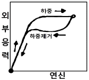

초음파비파괴검사산업기사 (2017-08-26 기출문제)
1과목: 비파괴검사 개론
1. 주어진 필름을 10mAㆍmin 으로 노출했을 때 관심 부위의 농도가 0.8H&D 이었다. 관심부위의 농도를 2.0H&D 로 하고자할 때 필요한 노출(mAㆍmin)은 약 얼마인가? (단, 농도 0.8H&D 에서의 상대노출 logE = 1.00이고, 농도 2.0H&D 에서의 상대 노출 logE = 1.62 이다.)
- 22
- 42
- 62
- 82
(정답률: 59%)

2. 와전류탐상시험에 대한 장점을 설명한 것으로 틀린 것은?
- 관, 환봉, 선 등에 대하여 고속으로 검사가 가능하다.
- 결함크기, 재질변화 등을 동시에 검사하는 것이 가능하다.
- 비접촉 방법으로 원격조작이 가능하여 좁은 영역, 관의 내부 검사 등이 가능하다.
- 강자성 금속, 전도성이 좋은 재질 등의 검사가 용이하고, 자동으로 검사가 가능하므로 결함의 종류, 형상 등의 판별이 쉽다.
(정답률: 64%)
3. 다음 중 초음파탐상시험을 설명한 것으로 옳은 것은?
- 시험물 내부상태를 단면 또는 평면형태로 표시할 수 있다.
- 가장 널리 이용하는 수동탐상방법은 연속파법이다.
- 균열성 결함은 검출하기가 매우 어렵다.
- 결함의 방향성은 검출능에 영향을 주지 않는다.
(정답률: 83%)
4. 파괴시험을 정적시험과 동적시험으로 나눌 때 동적시험에 해당하는 것은?
- 경도시험
- 피로시험
- 인장시험
- 크리프시험
(정답률: 64%)
5. 침투탐상시험의 단점이 아닌 것은?
- 시험체의 크기 및 모양에 많은 제한을 받는다.
- 시험체의 표면온도에 따라 검사 감도가 달라진다.
- 시험체의 표면에 열려 있는 결함이어야만 검출이 가능하다.
- 다공성 또는 흡수력이 큰 재질로 구성된 시험체는 검사하기가 곤란하다.
(정답률: 82%)
6. 합금주철에 첨가하는 원소 중 강력한 흑연화 억제제 이며 조직을 치밀하고 균일하게 하는 원소는?
- Cu
- Ni
- Ti
- V
(정답률: 58%)
7. 그림은 어떤 재료를 인장시험하여 항복 구역까지 소성 변형시킨 후 하중을 제거했을 때의 응력-변형곡선을 나타낸 것이다. 이에 해당하는 재료로 옳은 것은?

- 수소저장합금
- 탄소공구강
- 초탄성합금
- 형상기억합금
(정답률: 62%)
8. 체심입방격자에 관한 특징을 설명한 것 중 틀린 것은?
- 배위수는 8이다.
- 원자충진율은 약 68% 이다.
- 단위격자에 속한 원자수는 총 4개이다.
- Cr, Mo, V은 체심입방격자 금속에 해당된다.
(정답률: 78%)
9. Fe-C계 평형상태도 상의 1490℃에서 δ 고용체 + 용융액 ⇔ γ 고용체로 되는 반응은?
- 공정반응
- 공석반응
- 포정반응
- 편석반응
(정답률: 68%)
10. 18 - 8 스테인리스강에 대한 설명으로 옳은 것은?
- Cr 8%, Ni 18% 를 함유한 스테인리스강으로 마텐자이트 조직을 갖는다.
- W 18%, Ni 8% 를 함유한 스테인리스강으로 펄라이트 조직을 갖는다.
- Cr 18%, Ni 8% 를 함유한 스테인리스강으로 오스테나이트 조직을 갖는다.
- Ni 8%, W 18% 를 함유한 스테인리스강으로 페라이트 조직을 갖는다.
(정답률: 91%)
11. 상온에서 냉간가공한 금속재료를 가열할 때 발생하는 조직변화의 순서로 옳은 것은?
- 재결정 → 회복 → 결정립성장
- 결정립성장 → 회복 → 재결정
- 재결정 → 결정립성장 → 회복
- 회복 → 재결정 → 결정립성장
(정답률: 77%)
12. 철광석과 그에 따른 화학식이 올바르게 연결된 것은?
- 자철광 : Fe3O4
- 능철광 : Fe2O3
- 갈철광 : FeCO3
- 적철광 : 2Fe2O3ㆍ3H2O
(정답률: 65%)
13. 인청동에서 취약한 성질을 나타내는 화합물은?
- Cu2N
- Cu3P
- Fe2S
- Fe2N
(정답률: 68%)
14. 초경합금의 특성을 설명한 것 중 틀린 것은?
- 고온에서 변형이 많다.
- 내마모성과 압축강도가 높다.
- 고온 경도 및 강도가 양호하다.
- 사용목적에 따라 재질의 종류 및 형상이 다양하다.
(정답률: 81%)
15. 황동에 Ni을 첨가한 것으로 색깔이 은과 비슷하여 예로부터 장식용, 식기, 악기 등으로 사용되어 왔으며, 탄성, 내식성이 좋아 탄성재료, 화학기계용 재료에 사용되는 것은?
- 백동
- 양은
- 쾌삭 황동
- 네이벌 황동
(정답률: 74%)
16. 다음 중 용접부의 변형 교정 방법이 아닌 것은?
- 롤러에 거는 방법
- 아크 에어 가우징법
- 박판에 대한 점 수축법
- 형재에 대한 직선 수축법
(정답률: 59%)
17. 피복 아크 용접에서 정격 2차 전류가 300A, 정격 사용률이 50%인 아크용접기로 실제 200A의 전류로 용접한다고 가정하면 허용 사용률은 약 몇 % 인가?
- 113
- 120
- 144
- 165
(정답률: 74%)
18. 교류 아크 용접기는 무부하 전압이 비교적 높기 때문에 감전의 위험이 있다. 다음 중 용접사를 보호하기 위한 부속장치로 가장 적합한 것은?
- 원격제어장치
- 전격방지장치
- 핫 스타트 장치
- 고주파 발생 장치
(정답률: 72%)
19. 용접봉 기호 E 4316에서 E의 의미로 옳은 것은?
- 용접자세
- 아크 안정제
- 가스 용접봉
- 피복 아크 용접봉
(정답률: 77%)
20. 잔류응력이 존재하는 제품에 인장이나 압축하중을 주어 용접부에 약간의 소성 변형을 시킨 후 하중을 제거하는 잔류 응력 완화 방법은?
- 피닝법
- 국부 풀림법
- 저온 응력 완화법
- 기계적 응력 완화법
(정답률: 60%)
2과목: 초음파탐상검사 원리 및 규격
21. 초음파 빔의 지향각(분산각)을 측정할 수 있는 최소거리는 X0(근거리 음장)의 대략 몇 배인가?
- 0.5X0
- 0.8X0
- 1.6X0
- 3.2X0
(정답률: 77%)
22. 다음 중 초음파 파장에 대한 설명은?
- 속도와 주파수에 정비례한다.
- 속도와 주파수의 곱에 비례한다.
- 속도에 정비례하고 주파수에 반비례한다.
- 속도에 반비례하고 주파수에 반비례한다.
(정답률: 82%)
23. 어떤 계면에서 음압반사율이 0.85 이고, 통과된 두 번째 매질의 반대면에서 초음파가 100% 반사한다고 간주할 때 음압의 왕복 투과율은 약 얼마인가? (단, 다른 인자는 무시한다.)
- 0.15
- 0.28
- 0.72
- 0.85
(정답률: 47%)
24. 탐촉자의 진동자 재질 중 티탄산바륨(Barium Titanate)의 특징이 아닌 것은?
- 초음파의 송ㆍ수신 효율이 좋다.
- 불용성이며 화학적으로 안정하다.
- 내마모성이 낮아 수명 단축이 심하다.
- 100℃까지는 온도의 영향을 받지 않는다.
(정답률: 76%)
25. 감쇠량(dB)의 차이가 -14dB 이었다면 신호크기의 비는 약 얼마인가?
- 0.2
- 0.5
- 0.8
- 1
(정답률: 65%)
26. 다음 중 초음파탐상시험에서 불감대에 영향을 미치는 인자가 아닌 것은?
- 펄스 반복 주파수
- 검사 주파수
- 펄스 길이
- 피검체에서의 음속
(정답률: 43%)
27. 수침법에서 탐촉자의 근거리 음장 효과를 제거하기 위한 방안으로 옳은 것은?
- 초점 탐촉자를 사용한다.
- 탐촉자 주파수를 증가시킨다.
- 탐촉자 크기가 큰 것을 사용한다.
- 적절한 물거리(water path distance)를 사용한다.
(정답률: 80%)
28. 초음파가 두 매질의 계면을 통과할 때 제 1매질이 제2매질에 비해 음향 임피던스는 높으나 음속은 같을 때 굴절각은?
- 입사각의 2배이다.
- 입사각과 같다.
- 입사각보다 작다.
- 입사각보다 크다.
(정답률: 71%)
29. 초음파탐상 시 탐상감도와 관련된 설명으로 틀린 것은?
- 탐상감도는 가능한 최저로 하여 잡음신호로 인한 비관련지시와 결함지시가 혼동이 되지 않도록 해야한다.
- 피검체의 표면 거칠기, 접촉 상태, 주사속도 등 탐상에 방해 받을 조건을 감안하여 주사감도를 설정한다.
- 평가감도는 인공결함을 이용하여 설정한 감도값에서 2배(6dB), 4배(12dB) 등으로 감도를 높인 값이다.
- 평가감도를 설정하는 방법에는 DAC법, DGS법, 최대감도법 및 대비시험편 방법의 4가지가 일반적으로 사용된다.
(정답률: 59%)
30. 단강품의 수직탐상 시 임상에코가 높고 저면에코가 나타나지 않는 경우의 처리 방법은?
- 탐상감도를 약간 높인다.
- 탐상감도를 약간 낮게 한다.
- 시험 주파수를 약간 높인다.
- 시험 주파수를 약간 낮게 한다.
(정답률: 71%)
31. 강 용접부의 초음파탐상시험 방법(KS B 0896)에 대한 설명으로 다음 중 옳지 않은 것은?
- 용접부의 탐상은 원칙적으로 경사각법으로 하여야 한다.
- 수직탐상이 결함 검출에 적합한 경우는 수직탐촉자를 사용해도 된다.
- 용접 후 열처리 등의 지정이 있는 경우라도 합부판정은 열처리전에 하여야 한다.
- 탐상면의 곡률 반지름이 1000mm이상인 원둘레 이음 용접부는 평판이음으로 간주하여 검사한다.
(정답률: 77%)
32. 건축용 강판 및 평강의 초음파탐상시험에 따른 등급분류와 판정기준(KS D 0040)에서 시험체 두께가 30mm 인 경우 수직탐촉자로 탐상할 때 진동자의 유효지름과 공칭주파수로 옳은 것은?
- 지름 : 20mm, 주파수 : 5MHz
- 지름 : 20mm, 주파수 : 4MHZ
- 지름 : 30mm, 주파수 5MHz
- 지름 : 30mm, 주파수 4MHz
(정답률: 66%)
33. 초음파탐상 시험용 표준시험편(KS B 0831)에서 수직 및 경사각 탐상의 탐상감도 조정에 사용되는 표준시험편은?
- STB-A1
- STB-A2
- STB-A3
- STB-N1
(정답률: 88%)
34. 건축용 강판 및 평강의 초음파탐상시험에 따른 등급분류와 판정 기준(KS D 0040)에 의해 건축용 강판의 초음파탐상시 등급분류와 판정기준으로 옳은 것은?
- 등급 X일 때 점적률이 20% 이하
- 등급 Y일 때 점적률이 10%이하, 국부점적률이 15% 이하
- 등급 X일 때 점적률이 15%이하
- 등급 Y일 때 점적률이 7%이하, 국부점적률이 20% 이하
(정답률: 63%)
35. 보일러 및 압력용기에 대한 초음파탐상검사(ASME Sec.Ⅴ Art.4)에 따라 곡률시험편을 제작하였다. 이때 시험편 지름이200mm라고 할 때 적용할 수 있는 시험체의 곡률 범위는?
- 100mm ~ 200mm
- 150mm ~ 250mm
- 180mm ~ 300mm
- 200mm ~ 350mm
(정답률: 72%)
36. 금속재료의 펄스반사법에 따른 초음파탐상시험방법 통칙(KS B 0817)에서 규정하는 초음파탐상기의 감도를 조정하는 방법은?
- 수직빔 및 경사각빔 방식
- 시험편 및 바닥면 에코 방식
- 표준시험편 및 대비시험편 방식
- 접촉법 및 수침법 방식
(정답률: 51%)
37. 강 용접부의 초음파탐상시험 방법(KS B 0896)에서 규정한 경사각 탐촉자의 성능 점검 항목과 점검 시기가 옳은 것은?
- A1감도 : 작업 개시 시, 작업시간 4시간 이내마다
- 빔 중심축 치우침 : 작업 개시 시, 작업 시간 8시간 이내마다
- 불감대 : 작업 개시 시, 작업 시간 4시간 이내마다
- 접근 한계 길이 : 작업 개시 시, 작업시간 8시간 이내마다
(정답률: 63%)
38. 보일러 및 압력용기에 대한 초음파탐상검사(ASME Sec.Ⅴ, Art.4)에서 규정하고 있는 초음파 탐상장비의 주파수 범위로 옳은 것은?
- 0.1 ~ 0.5 MHz
- 0.5 ~ 1 MHz
- 1 ~ 5 MHz
- 5 ~ 20 MHz
(정답률: 74%)
39. 강 용접부의 초음파탐상시험 방법(KS B 0896)에서 규정한 탐상기의 필요성능 중 시간축 직선성의 측정허용 범위는?
- ±1% 범위 내
- ±2% 범위 내
- ±3% 범위 내
- ±5% 범위 내
(정답률: 59%)
40. 강 용접부의 초음파탐상시험 방법(KS B 0896)에 의한 경사각 탐촉자의 성능점검 중에서 구입 시 및 보수를 한 직후에 하는 점검 항목이 아닌 것은?
- 접근한계길이
- 빔 중심축의 치우침
- 원거리 분해능
- 불감대
(정답률: 46%)
3과목: 초음파탐상검사 시험
41. 거리진폭보상(DAC) 회로의 역할은?
- 탐상기의 증폭 오차를 감소시키는 것이다.
- 시험체내에서의 감쇠에 대한 보상회로이다.
- CRT 화면의 시간에 대한 보상회로이다.
- 시험체에서의 거리와 CRT 화면의 시간을 동조시키는 것이다.
(정답률: 73%)
42. CRT상에 나타난 에코의 높이가 CRT 스크린 높이의 50%일 때 게인조정기를 조정하여 6dB 을 낮추면 에코높이는 CRT 스크린 높이의 몇 % 로 낮아지는가?
- 5%
- 10%
- 25%
- 50%
(정답률: 84%)
43. 펄스반사식 초음파 탐상기에서 시간축을 만들어 내는 부분은 어느 곳인가?
- 펄스발생기
- 소인회로
- 수신기
- 동기장치
(정답률: 67%)
44. 수직탐촉자 5Z20N으로 STB-A1을 사용하여 측정범위를 100mm로 조정한 후 두께 70mm의 금속재료를 탐상한 결과 89mm의 위체에 제1회 저면에코가 나타났다. 이재료의 음속(m/s)은 얼마인가?
- 2170
- 4640
- 5900
- 6260
(정답률: 63%)
45. 수직탐상법으로 초음파탐상검사를 할 때 탐상방법과 방향에 관한 설명으로 옳은 것은?
- 결함을 가장 잘 검출하는 방향은 일반적으로 결함의 투영 면적이 최대로 되는 방향이다.
- 단강품에 발생하는 결함은 탐상이 가장 용이한 방향에서 수직탐상만으로 모두 검출할 수 있다.
- 초음파의 전파방향과 평행하고, 넓게 퍼져 있는 결함일수록 반사에코 높이가 크게 검출된다.
- 단조재에서는 주조 시의 결함이 단조에 의한 소성변형에 따라서 변형하기 때문에 결함의 방향등은 추정할 수 없다.
(정답률: 73%)
46. 용접부 탐상 시 결함의 크기 측정에 직접적인 영향을 미치는 인자가 아닌 것은?
- 탐촉자의 분산각
- 탐촉자의 분해능
- 시험체의 표면조건
- 탐촉자의 입사점 위치
(정답률: 57%)
47. 경사각탐상으로 탐상면에 수직인 평면상의 결함을 검출하려 할 때 2개의 탐촉자를 전후로 배치하여 한 쪽은 송신, 다른 쪽은 수신하도록 하는 탐상 방법은?
- 진자주사법
- 탠덤주사법
- 투과주사법
- K주사법
(정답률: 89%)
48. 모재 두께 20mm 인 용접부를 45˚경사각 탐촉자를 이용하여 탐상하였을 때 초음파빔거리 50mm에서 결함이 검출되었다면 이 결함은 탐촉자 입사점으로부터 모재 표면을 따라 약 얼마의 거리(탐촉자-결함 거리)에 존재하는가?
- 14.2mm
- 28.2mm
- 35.4mm
- 70.4mm
(정답률: 60%)
49. ASTM 대비시험편 중 면적-진폭 시험편(Area Amplitude Blocks)의 평저공에 대한 설명으로 맞는 것은?
- No.1 시험편에서 No.8 시험편까지 있으며 직경이 1/64인치씩 증가한다.
- 직경이 모두 같다.
- 시험편의 탐상면에서 평저공까지 거리가 다르다.
- No.1 시험편이 제일 크고 No.8 시험편이 제일 작다.
(정답률: 73%)
50. 초음파탐상시험에 사용되는 탐촉자의 유효한 Q값은 어느 범위 내에 있어야 하는가?
- 1 ~ 10
- 10 ~ 100
- 100 ~ 1000
- 20000 이상
(정답률: 47%)
51. 탐촉자에서 댐핑(Damping)상수가 작은 것에 비하여 댐핑상수가 큰 탐촉자의 특징은?
- 펄스폭이 길어진다.
- 펄스 강도가 작아진다.
- 분해능이 나빠진다.
- 탐촉자 크기가 작아진다.
(정답률: 42%)
52. 펄스반사식 검사장비에서 필터나 리젝션을 부착하는 목적 또는 효과에 대한 설명이 틀린 것은?
- 리젝션의 목적은 임상에코 같은 것을 억제하기 위한 것이다.
- 리젝션의 사용 시 장치의 증폭직진성이 나빠지므로 주의해야 한다.
- 필터는 파형을 평활하게 하기 위한 것이다.
- 필터를 사용하면 장치의 증폭직선성이 나빠지므로 주의해야 한다.
(정답률: 52%)
53. 펄스반복주파수를 높이려고 할 때 주의 깊게 고려할 사항으로 틀린 것은?
- 주사속도를 빠르게 할 수도 있다.
- 아날로그 탐상기 사용 시 화면이 밝아진다.
- 고스트 에코의 발생 여부에 주의하여야 한다.
- 시험주파수가 높아지므로 분해능의 향상을 기대할 수 있다.
(정답률: 72%)
54. 초음파탐상시험에 사용되는 시험편이 아닌 것은?
- IIW Block
- Basic Calibration Block
- STB-A1 Block
- Profile gauge
(정답률: 81%)
55. 용접부의 경사각탐상에 대한 설명으로 옳은 것은?
- 기공이 가장 검출하기 쉽다.
- 비드에서의 에코는 결함에코보다 항상 작게 나타나기 때문에 무시해도 좋다.
- 동일 탐상면에서 탐상하면 모든 용접부의 결함은 1회 반사법보다 직사법이 에코높이가 높게 나타난다.
- 탠덤법은 X 개선의 용입불량이나 I 개선의 융합불량의 검출에 적합하다.
(정답률: 64%)
56. 경사각탐촉자의 측정범위를 조정하는데 사용되지 않는 시험편은?
- STB-A1 Block
- IIW-2형(MINIATURE Block)
- DSC형 Blcok
- RB-D Block
(정답률: 72%)
57. 초음파탐상기 본체에 요구되는 성능이 아닌 것은?
- 증폭직선성
- 시간축직선성
- 접근한계길이
- 분해능
(정답률: 66%)
58. 집속(focus type) 탐촉자를 사용할 때 필요한 사항이 아닌것은?
- 집속거리
- 집속범위
- 집속빔 폭
- 집속 노이즈 크기
(정답률: 80%)
59. CRT 스크린에 결함을 평면상태로 나타내게 해주는 표시방법은?
- 자동기록표시
- A-주사표시
- B-주사표시
- C-주사표시
(정답률: 85%)
60. A-scan 장비에서 동기화장치(synchronizer)의 clock 또는 timer회로는 다음 중 무엇을 결정하는가?
- 파장길이
- 게인(gain)
- 펄스 반복속도
- sweep 길이
(정답률: 58%)
logE = log(H&D) - log(노출량)
따라서, 농도를 2.0H&D 로 높이기 위해서는 log(H&D) 값은 동일하게 유지하면서 logE 값을 1.62 로 높여야 한다.
즉, 1.62 = log(H&D) - log(노출량) 이므로, log(H&D) - 1.62 = log(노출량) 이다.
농도가 0.8H&D 일 때의 상대노출 logE 값이 1.00 이므로, log(H&D) - 1.00 = log(10mAㆍmin) 이다.
따라서, log(H&D) = 2.62 이고, log(노출량) = 2.62 - 1.62 = 1.00 이다.
이를 antilog 로 계산하면, 노출량은 10mAㆍmin x 10 = 100mAㆍmin 이다.
따라서, 정답은 "42" 이다.